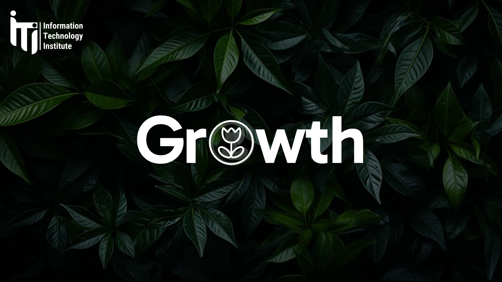

I DESIGN
DIGITAL THINGS
FOR PEOPLE.
I like taking complicated products,
asking too many questions, then making them feel obvious.
research first ✦
mesh kol 7aga button :)
iterate → iterate →
PRODUCT DESIGN ✦ USER RESEARCH ✦ UI DESIGN ✦ DESIGN SYSTEMS ✦ PROTOTYPING ✦ PRODUCT DESIGN ✦ USER RESEARCH ✦ UI DESIGN ✦
(01)
Selected work
Projects where I got to understand messy problems and turn them into useful experiences.
01 · MOBILE PRODUCT
NOMIA
Making solo travel feel safer, more social, and less intimidating for women.
VIEW CASE STUDY ↗SAFETY · COMMUNITY · TRAVEL 01
01
0102 · DASHBOARD
HABITAT
A clearer way to manage real-estate relationships, listings, and everyday work.
VIEW PROJECT ↗CRM · DASHBOARD · WORKFLOWS 02
02
0203 · DISCOVERY PRODUCT
VIBEIT
Helping people discover activities and actually get out there.
VIEW CASE STUDY ↗DISCOVER · MOVE · CONNECT 03
03
03(02) A BIT ABOUT ME
I care about the tiny decisions that make a product feel easy.
I’m Asmaa, a Product / UI UX Designer with a Computer Science background. I work across research, flows, interfaces and design systems — usually with a lot of curiosity and a suspicious number of Figma tabs.
UX RESEARCHPRODUCT DESIGNDESIGN SYSTEMSFIGMAPROTOTYPING
OFF THE CLOCK
DESIGNING, LEARNING,
AND PROBABLY OVERTHINKING
THE SPACING.


HAVE A GOOD
PROBLEM?
asmaaelsayed158@gmail.com ↗ASMAA ELSAYED · 2026BACK TO TOP ↑